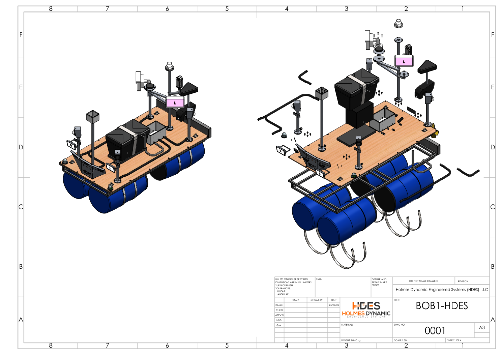

PISO-AID / COMPLETE DESIGN VIEW / v0.3
Meet BOB 1.
Explore the complete prototype design.
Explore the components, change a load case, and follow the path from drawings to a tested waterborne prototype.
01 / ASSEMBLY LAB
Explore the assembly
Rotate with the slider. Select a component below to highlight it. Major equipment centres follow drawing 0001. Heights, shapes, frame topology, drum spacing and conduit routes remain simplified; this is not a native CAD export.
DRAWING COVERAGE
Every top-level parts-list row is indexed.
Choose an item to highlight its group. Quantities below come from drawing 0001, sheet 4; they do not establish procurement or installation status.
| Item | Component | Qty. | Representation / note |
|---|
Subassemblies, small hardware and drawing reference
The control post includes the 360 camera, all-round lamp, two infrared illuminators, LTE antenna/mount, post/pad, glands, screws, nuts, washers and plugs. The corner-camera groups include their housings, posts, pads, covers, glands, U-bolts and mounting plates. The GPS/IMU and control boxes include enclosure pads and glands. Mounts are schematic and hardware is grouped; the viewer does not model every screw or internal circuit board.

Original mechanical drawing 0001, sheet 1, rendered directly from the project PDF. The drawing’s annotations remain in their original metric units.
02 / LOAD CASE LAB
What changes when we add mass?
Four ideal horizontal cylinders in freshwater. Nominal drum capacity is used as a proxy for displacement volume.
Allowance applies to base mass only. Added mass is a scenario input, not an approved cargo load.
Calculation basis and limits
Equations use SI units internally. Draft is solved from circular-segment area using bisection, with equal loading and level trim.
For radius r and draft d: A = r² acos((r − d)/r) − (r − d) √(2rd − d²); supported mass = density × 4 × equivalent length × A. Crown clearance = 2r − d. Crown clearance is not deck freeboard.
This calculation does not establish structural capacity, stability, load placement, wave response, or safe payload. Actual drum geometry, sealed external volume, and measured masses must replace these assumptions.
03 / BUILD PATH
From drawings to evidence
The latest physical completion status has not been verified. This sequence is a work plan, not a record of completed tests.
04 / SOURCE & NEXT ITERATION
Make the next version more precise.
Next: validated CAD geometry, resolved equipment configuration, actual drum specifications, measured hull mass, and dated build photos or test records. These can refine the schematic and populate the build path.
- Holmes, J. V. (2026, September 12). Bob 1 hull: Preliminary capacity estimate (Calculation revision 0). Project analysis; values are estimates.
- Holmes Dynamic Engineered Systems. (2025, October 26). BOB1-HDES mechanical drawings 0001–0033 (V03). Full-assembly BOM and centres were read directly from drawing 0001; selected subassembly drawings were also reviewed. This explorer does not validate fabrication approval.
- Holmes, J. V. (2026, September 5). Bob 1 folder review. Source inventory and configuration discrepancies.